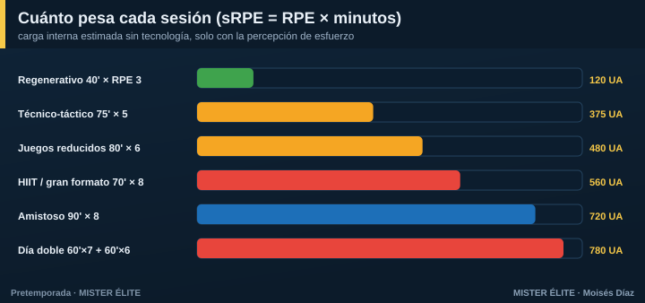
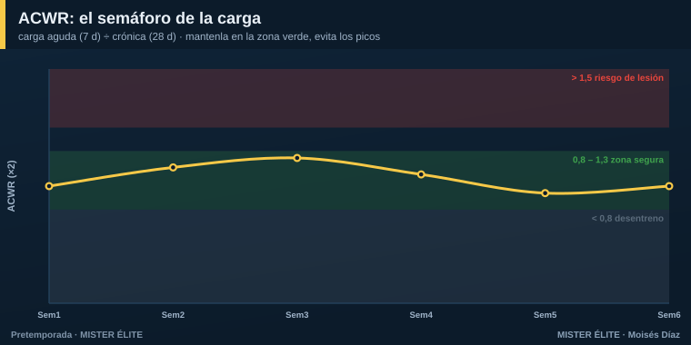
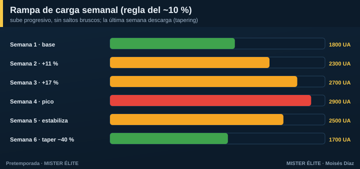
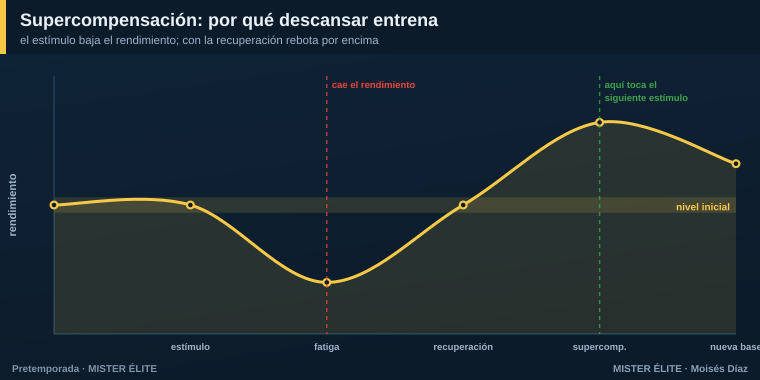

Módulo 02 · La carga física (y cómo controlarla sin tecnología)
Qué es "carga"
Carga externa = el trabajo que prescribes tú, al margen del jugador: minutos, metros, número de sprints, series, saltos. Se cuenta.
Carga interna = la respuesta biológica del jugador a ese trabajo: frecuencia cardiaca, esfuerzo percibido, fatiga. Se siente. La misma carga externa produce distinta carga interna según la forma, la fatiga, el calor o la edad. Es la que de verdad importa para la adaptación y el riesgo.
En pretemporada los jugadores llegan desentrenados: una carga externa moderada genera una carga interna alta. Por eso hay que empezar suave aunque "parezca poco".
Los cuatro mandos que manejas
| Componente | Qué es | Cómo se SUBE | Cómo se BAJA |
|---|---|---|---|
| Volumen | cantidad total (min, distancia, repeticiones) | más minutos/series | menos minutos/series |
| Intensidad | esfuerzo por unidad de tiempo | espacios grandes, menos jugadores, menos pausa | espacios pequeños, más jugadores, más pausa |
| Densidad | relación trabajo : pausa | bajar la pausa (1:1 → 2:1) | subir la pausa (1:3) |
| Complejidad | carga mental/coordinativa | más oposición, más reglas, más decisiones | tareas analíticas, sin oponente |
Con balón, la intensidad y la densidad se manejan sobre todo cambiando espacio, número de jugadores y reglas (Hill-Haas). Esto es clave: te permite "dosificar el físico" sin sacar el balón.
Medir la carga SIN tecnología: el método sRPE
No necesitas GPS. Necesitas una pregunta y una libreta. El método sRPE (Foster) es válido, barato y se usa hasta en la élite.
Carga de la sesión (UA) = RPE × minutos. Pregunta al jugador, 30 minutos después de acabar (no en caliente): "¿Cómo de dura ha sido la sesión, del 0 al 10?"
Escala CR-10 (anclajes): 0 reposo · 2-3 fácil · 4-5 algo duro · 6-7 duro · 8-9 muy duro · 10 máximo.

Ejemplo: una sesión de 75 min que el equipo valora en RPE 6 → 450 UA. Un amistoso de 90 min a RPE 8 → 720 UA. Sumando los días tienes la carga semanal.
Dos cifras que valen oro (Foster)
- Monotonía = carga media diaria ÷ desviación estándar de las cargas diarias de la semana. Una semana plana (todos los días igual) da monotonía > 2 = riesgo. Antídoto: alterna días duros y suaves.
- Strain (tensión) = carga semanal × monotonía. Semanas muy cargadas Y muy planas → enfermedad y lesión.
Wellness: el termómetro de la mañana
Cada mañana, 5 preguntas (1 a 5): sueño, fatiga, dolor muscular, estrés, ánimo. Suma de 5 a 25. Si un jugador cae > 15-20 % respecto a su media, bandera roja: ajusta su carga. Cuesta un papel o un mensaje de WhatsApp y detecta la fatiga antes que cualquier dato objetivo.
(En el material de Herramientas tienes las plantillas listas de sRPE y wellness.)
El ACWR: el semáforo de la carga
El ACWR (Gabbett) compara lo que has hecho esta semana con lo que tu cuerpo está acostumbrado a hacer:
ACWR = carga aguda (suma de sRPE de los últimos 7 días) ÷ carga crónica (media semanal de las últimas 4 semanas).

- Zona verde 0,8 – 1,3 → menor riesgo. Ahí quieres estar.
- > 1,5 → rojo: salto de carga peligroso, el riesgo de lesión se multiplica.
- < 0,8 → desentrenamiento (pierdes forma).
Honestidad científica: el ACWR tiene críticas serias (Impellizzeri, Lolli, Windt). No es una bola de cristal y no debe usarse como verdad absoluta. Úsalo como lo que es: un semáforo que te avisa de saltos bruscos. Combínalo siempre con el wellness y el sentido común.
El "ramp-up": sube despacio
La regla práctica: no subas la carga semanal más de ~10 % respecto a la semana anterior. Subidas de > 15 % se asocian a más lesiones. Es una orientación, no un dogma; lo importante es el principio: progresión gradual, sin picos.

Por qué la pretemporada es la ventana de más riesgo: los jugadores llegan con la carga crónica baja, así que cualquier carga "normal" dispara el ACWR. Construye base 2-3 semanas antes de meter alta velocidad y competición.
Supercompensación: por qué descansar también entrena
El estímulo de entrenamiento baja el rendimiento (fatiga). Con la recuperación, el cuerpo no solo vuelve a su nivel: rebota por encima. Eso es la supercompensación.

- Si el siguiente estímulo cae en el pico de supercompensación → progresas.
- Si caes siempre demasiado pronto, sin recuperar → sobrecarga y sobreentrenamiento.
- Si caes demasiado tarde → pierdes la adaptación.
De ahí la regla de oro: 48 horas entre estímulos máximos de la misma capacidad (fuerza máxima, sprint, HIIT duro).
Las palancas de recuperación más baratas y potentes: - Sueño — la nº 1. Objetivo ≥ 8-9 h en pretemporada. Dormir poco = más lesión y peor recuperación. - Nutrición — reponer hidratos tras la sesión; 1,6-2,0 g/kg/día de proteína para reparar. - Hidratación — perder > 2 % del peso ya baja el rendimiento. Pésate antes y después.
Prevención de lesiones: la pretemporada se juega aquí
Más del 50 % de las roturas de isquios ocurren en las ~7 semanas de pretemporada (Ekstrand). La relación carga-lesión tiene forma de U: tanto poca carga (tejido frágil) como demasiada (picos) lesionan. El mínimo de la U —el sitio seguro— es carga crónica alta y bien construida.
Las tres claves de la evidencia: 1. Exponer al sprint de forma progresiva. El sprint rompe isquios, pero no exponerse a la alta velocidad también: el tejido llega sin preparar. Empieza con carreras al 70-85 % en la semana 1-2 y sube hasta el 100 % de forma gradual. 2. Nordic hamstring. Los programas que lo incluyen reducen ~51 % las lesiones de isquios (van Dyk/Al Attar). Hay matices metodológicos, pero sigue siendo la herramienta más recomendada. Progresar hasta 3×3-10 reps, 1-3 veces/semana. 3. Multicomponente (tipo FIFA 11+): reduce ~30 % las lesiones globales. Incluye isométricos, core, tobillo y equilibrio.
En una frase
Controla la carga con RPE y wellness, súbela despacio (~10 %/semana), vigila el semáforo ACWR, respeta las 48 h entre picos y mete prevención casi a diario. Eso es el 90 % de la prevención de lesiones.
Siguiente módulo: cómo meter todo esto, día a día, dentro del microciclo.